🚗 Auto-Man — Driving School Booking & Administration System
A full-featured web application built to support a local driving school with online lesson bookings, client management and calendar integration.
What It Does
- 📅 Lesson bookings — Students can select lesson types, choose times and book directly through the site
- 🔄 Google Calendar integration — Bookings sync with the business's Google Calendar so instructors and administrators see lessons in real time
- 👤 Client portal — Learners can view and manage their bookings securely
- 📱 Responsive UI — Front-end works across devices with custom CSS styling
- 📞 Information & services pages — Includes service areas, pricing, FAQs, contact and legal pages
Main Website – Home Page
The Home page serves as the primary entry point for Auto-Man Driving School, introducing the service, outlining key offerings and guiding visitors toward booking or making contact.
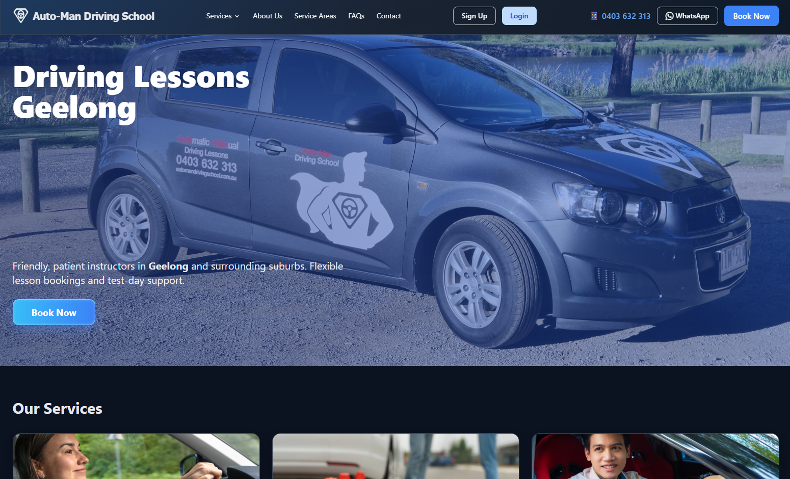It is designed to quickly build trust, explain who the service is for and make the next step clear and easy.
Hero Section
The hero section immediately communicates:
- The core service offering (driving lessons in Geelong)
- A friendly, professional brand identity
- Clear calls to action, including Book Now, phone and WhatsApp contact options
This ensures visitors can take action within seconds of arriving on the site.
Services Overview
The Our Services section presents the main lesson types in a clear, card-based layout, including:
- Beginner drivers
- Driving test packages
- Overseas licence conversion
- Nervous drivers
- Senior driver retests
- Special requirements
Each service includes a short description and pricing information where applicable, helping visitors quickly identify the option that best suits their needs.
Ethos and Approach
The Our Ethos section highlights the values behind the service, reinforcing trust and approachability:
- Patient and supportive instruction
- Strong focus on safety
- Flexible scheduling
This section helps differentiate the business by emphasising teaching style and learner experience, not just pricing or lesson length.
Social Proof
A featured testimonial provides real-world feedback from a past client, reinforcing credibility and helping new visitors feel confident in choosing the service.
Contact and Conversion
The page concludes with clear contact options:
- Phone
- Social media
- A prominent contact button for enquiries
This ensures visitors can easily ask questions or proceed to booking without needing to search for contact details.
Overall Purpose
The Home page is designed to:
- Clearly explain what Auto-Man Driving School offers
- Build confidence and trust quickly
- Support both immediate bookings and general enquiries
- Provide a smooth transition into deeper pages such as Services, FAQs or Booking
The result is a welcoming, informative landing page that balances marketing, usability and clarity.
Service Pages (Example: Beginner Driving Lessons)
Each service page provides clear, structured information about a specific driving lesson offering. While the exact content varies by service, pages follow a consistent, user-friendly layout designed to help visitors quickly understand what's offered and book with confidence.
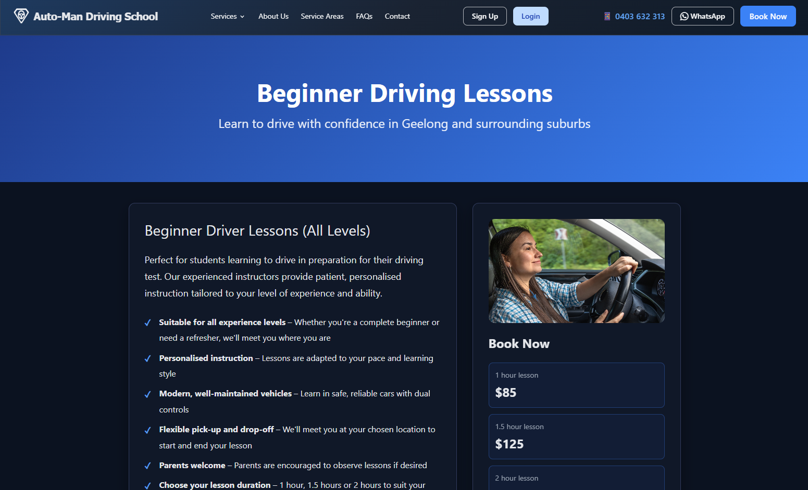Page Overview
The page opens with a prominent header identifying the service and its target audience, along with a short introductory statement describing who the service is for and where it's available (e.g. Geelong and surrounding suburbs).
Service Details
A main content section explains the service in more detail, including:
- Who the lessons are suitable for
- How instruction is delivered (pace, experience level, learning style)
- Key features such as personalised instruction, vehicle safety, and pick-up/drop-off options
This section focuses on setting expectations and reassuring new or nervous drivers.
Pricing & Booking
A dedicated booking panel displays:
- Available lesson durations
- Clear pricing for each option
- A direct call-to-action to book online or contact the instructor
Pricing is always visible and easy to compare, reducing friction at the decision point.
What You'll Learn
Most service pages include a "What You'll Learn" section that highlights core skills relevant to the service, such as:
- Vehicle control and road awareness
- Parking and manoeuvring
- Test preparation where applicable
The exact skills shown vary depending on the service type.
What to Expect
Where included, this section outlines the lesson experience itself, covering topics such as:
- Teaching approach and feedback style
- Safety and vehicle standards
- Scheduling flexibility and lesson structure
This helps reduce uncertainty, especially for first-time learners.
Meet Your Instructor
Most service pages feature a "Meet Your Instructor" section introducing Darren, including:
- Background and experience
- Teaching philosophy
- Qualifications, checks, and insurance
This section builds trust and reinforces the personal, instructor-led nature of the service.
Variations by Service
Not all service pages contain the same sections or level of detail. Content is tailored to suit the specific service (e.g. beginner drivers, test packages, senior retests), while maintaining a consistent look, tone, and booking flow across the site.
Service Areas
The Service Areas page clearly outlines where Auto-Man Driving School operates, helping prospective clients quickly confirm whether lessons are available in their suburb.
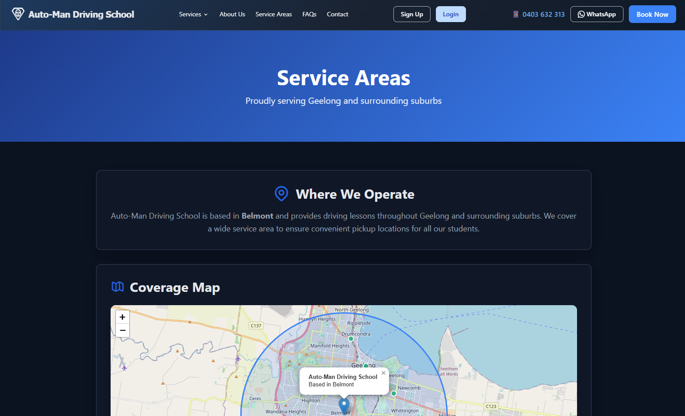The page highlights that Auto-Man Driving School is based in Belmont and services Geelong and surrounding suburbs, with a focus on convenient local pick-up locations rather than fixed lesson start points.
Coverage Overview
A visual coverage map shows the general operating radius around Belmont, giving users an at-a-glance understanding of the service area.
The map is supported by clear text explaining that lessons are available across Geelong and nearby suburbs.
Suburbs We Service
A clearly presented list of serviced suburbs allows users to easily check if their area is covered.
- Suburbs are displayed in a clean, readable layout for quick scanning
- The list reflects the most commonly serviced locations and can be updated as the service area changes
Outside the Listed Areas
A dedicated "Not in Your Area?" section reassures users that they can still get in touch if their suburb is not listed.
This encourages enquiries for special circumstances or potential service area extensions, without promising availability.
Overall, this page reduces uncertainty for new visitors, sets clear expectations around lesson availability, and provides a straightforward path to contact the business if clarification is needed.
Frequently Asked Questions
The Frequently Asked Questions (FAQ) page provides clear, straightforward answers to common questions about learning to drive with Auto-Man Driving School.
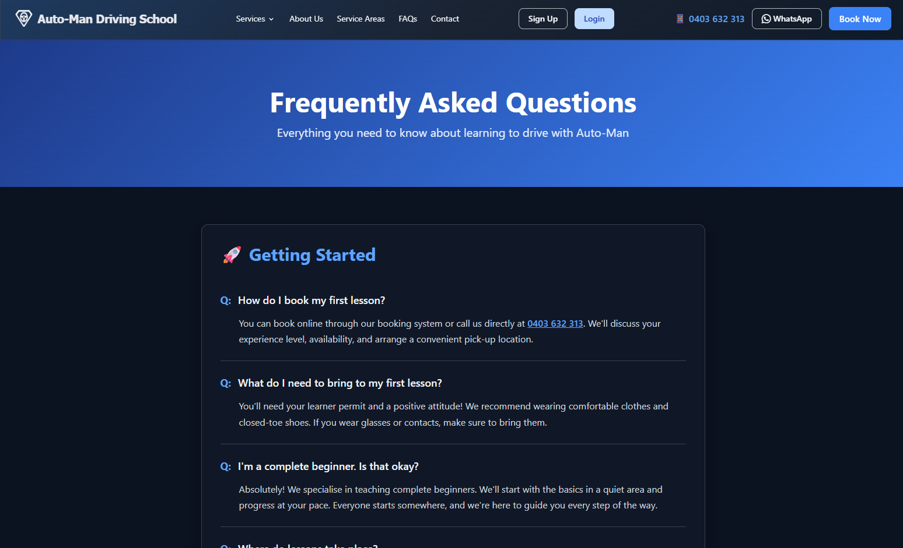The page is designed to help prospective clients quickly find practical information before booking, reducing uncertainty and the need for follow-up enquiries.
What This Page Covers
- Getting started with driving lessons, including how to book and what to expect for a first lesson
- Requirements for learners, such as permits and what to bring
- Reassurance for complete beginners, explaining how lessons are paced and tailored
- General questions about lesson structure, locations and scheduling
Purpose
- Helps new clients feel informed and confident before booking
- Addresses common concerns in a friendly, supportive tone
- Acts as a quick self-service reference for frequently asked questions
The FAQ content is written to be easy to read and approachable, supporting Auto-Man Driving School's focus on patient instruction, clear communication and reducing anxiety for new drivers.
Contact Us
The Contact Us page provides multiple, easy ways for prospective and existing clients to get in touch with Auto-Man Driving School.
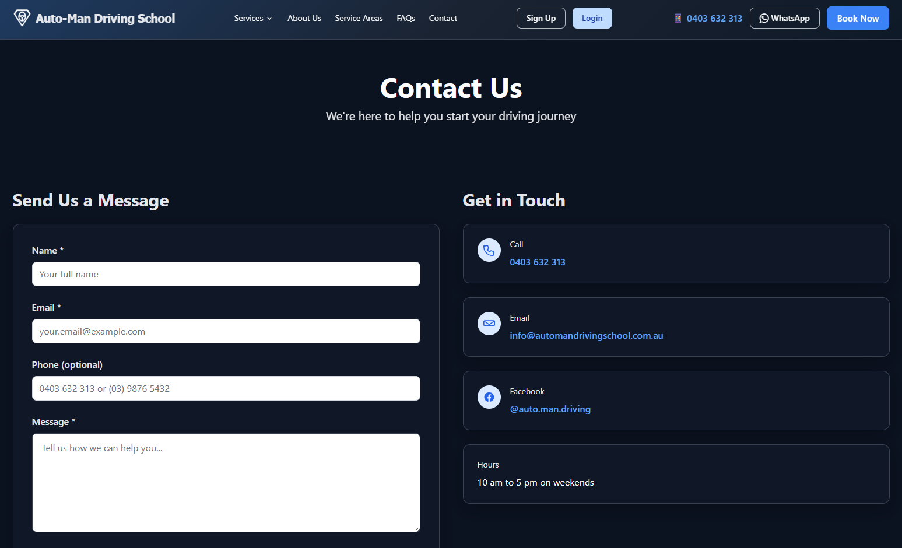The page is designed to make enquiries simple and accessible, whether a client prefers to send a message, call directly, or reach out via email or social media.
Send Us a Message
- A straightforward contact form allowing users to submit enquiries online
- Requires only essential details (name, email and message) to reduce friction
- Phone number is optional, allowing users to choose their preferred contact method
Get in Touch
- Direct phone number for quick enquiries or bookings
- Email address for longer or more detailed questions
- Facebook link for social contact and messaging
- Clear business hours displayed so clients know when to expect a response
Purpose
- Provides a central point of contact for all enquiries
- Supports different communication preferences
- Encourages early engagement for users who are not yet ready to book
The Contact Us page reinforces Auto-Man Driving School's focus on approachability, clear communication and making it easy for clients to ask questions before starting their driving journey.
Booking a Driving Lesson – User Flow
1. Book a Driving Lesson (Website)
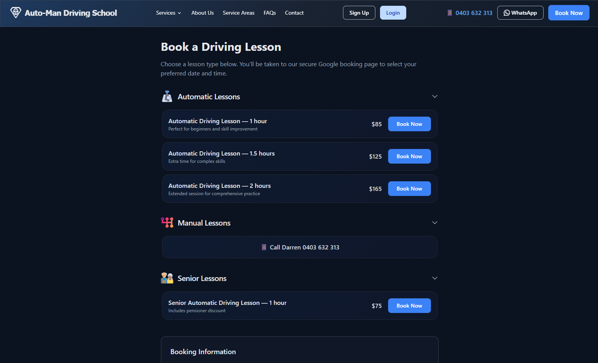Users start on the Book a Driving Lesson page and select a lesson type.
Lesson categories include:
- Automatic lessons (1 hr, 1.5 hrs, 2 hrs)
- Manual lessons (phone booking)
- Senior lessons (discounted)
Each option clearly displays duration, price, and a Book Now button.
Selecting Book Now redirects the user to the secure Google booking system.
2. Select Date & Time (Google Booking)

Users are taken to the Google appointment scheduling page.
Calendar view shows real-time availability.
User selects:
- Preferred date
- Available time slot
All times are shown in Australian Eastern Time (Melbourne).
Lesson duration and price are displayed before proceeding.
3. Enter Contact & Pickup Details
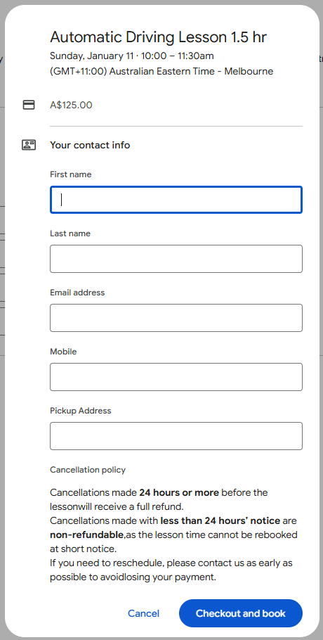After selecting a time, users complete the booking form.
Required information:
- First name
- Last name
- Email address
- Mobile number
- Pickup address (within service area)
Additional details:
- Lesson summary (date, time, duration)
- Price confirmation
Cancellation policy:
- Full refund for cancellations 24 hours or more before the lesson
- Less than 24 hours' notice is non-refundable
Users proceed by selecting Checkout and book.
4. Secure Payment (Stripe)
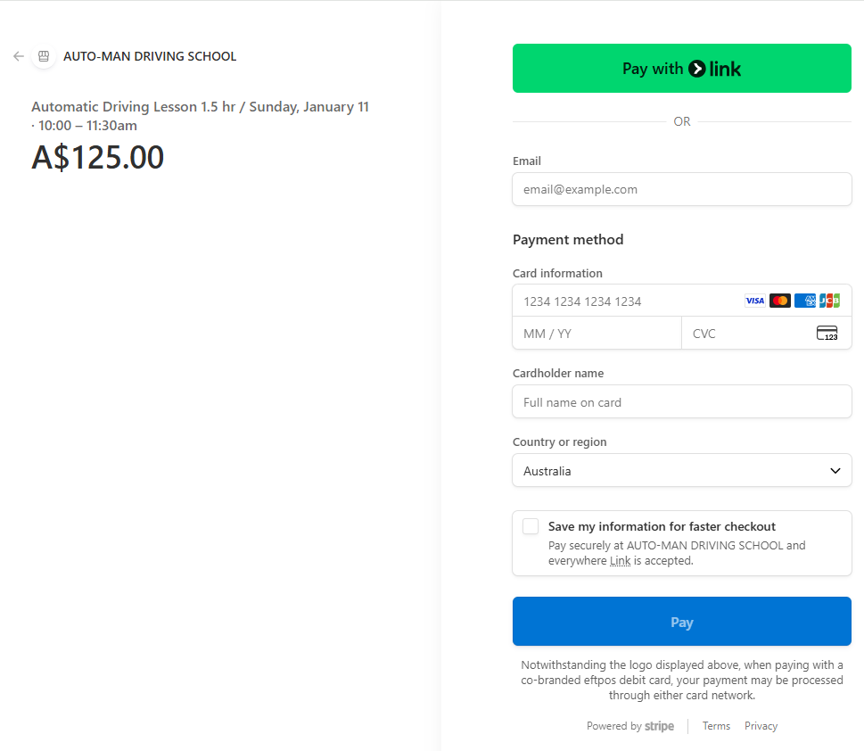Users are redirected to Stripe's secure checkout.
Payment options:
- Credit / debit card
- Pay with Link (optional)
Price is clearly displayed before payment.
Payments are processed securely by Stripe.
Users may optionally save details for faster checkout in future.
5. Booking Confirmation
Once payment is successful:
- Booking is confirmed immediately
- User receives a confirmation email with:
- Lesson details
- Date and time
- Pickup address
- Instructor details
- Lesson is added to the instructor's calendar automatically
Admin Dashboard – Calendar & Alerts
The Admin Dashboard provides a central, real-time view of all driving lessons and personal appointments in a weekly calendar format.
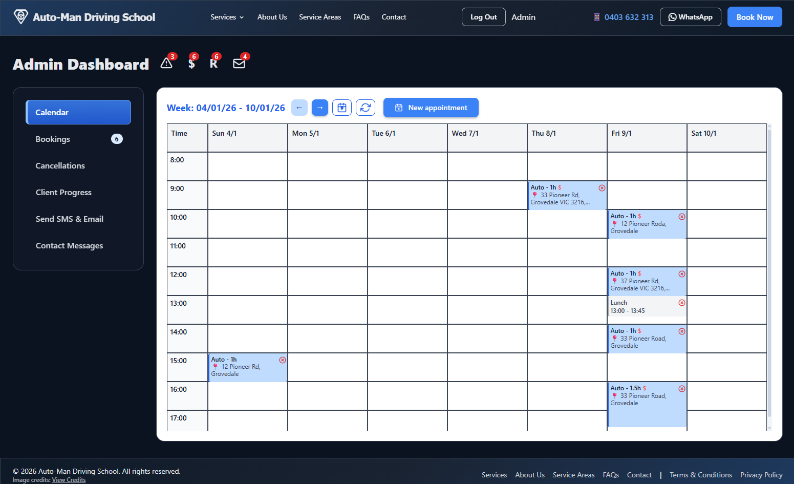The calendar supports previous and next week navigation, quick refresh and manual appointment creation, allowing administrators to move through schedules efficiently and make changes on the fly.
Calendar & Scheduling
- Weekly calendar view with clear time slots for each day
- Driving lesson appointments and personal appointments displayed together for full availability awareness
- Colour-coded lesson entries showing duration, location and lesson type
- Personal appointments block time to prevent double-booking
- One-click controls to move between weeks or jump back to the current period
Alerts & Operational Indicators
The dashboard includes visual alerts and counters highlighting items that require attention, including:
- Invalid or incomplete booking data
- Payments required
- Refunds required
- New Contact Us messages
These alerts allow administrators to quickly identify and prioritise follow-up actions without manually checking multiple screens.
Operational Value
This view enables staff to:
- See instructor availability at a glance
- Avoid scheduling conflicts
- Act quickly on payment, refund and data issues
- Manage the business day-to-day from a single, secure interface
Sensitive client information is restricted to authorised users only, with screenshots shown using representative data.
Admin Dashboard – Bookings Validation
When an invalid data alert is selected, administrators are taken directly to the Bookings view filtered to Invalid Only, showing only bookings with invalid data.
Each booking card highlights incomplete or invalid fields and provides inline tools to review, correct or override data well before the scheduled lesson.
Data Validation & Correction
- Invalid or incomplete fields (such as mobile number or address) are clearly highlighted
- Mobile numbers are validated against Australian formats, with the ability for administrators to override validation when appropriate (for example, allowing "None" where a mobile number is not available)
- Address validation includes Google-suggested addresses, enabling quick correction of near matches and accurate pickup locations
- A "Valid" indicator allows staff to confirm when each field has been reviewed
Administrative Review
An "Admin Checked" flag allows staff to confirm that a booking has been fully reviewed days ahead of the lesson, reducing last-minute issues.
Sensitive client information is visible only to authorised users, with screenshots shown using representative data.
Admin Dashboard – Payments & Follow-Up
When the payment alert is selected, administrators are taken directly to the Bookings view filtered to Payment required only, showing only bookings that require payment.
This allows administrators to quickly identify outstanding payments and take action without manually searching through upcoming lessons.
Payment Tracking
- Clear indicators show whether a booking has been paid
- Payments can be marked as received directly on the booking
- Filters allow administrators to view payment-required bookings only, streamlining follow-up
Operational Value
This workflow enables staff to:
- Identify unpaid bookings at a glance
- Follow up on payments well before the lesson date
- Reduce missed or delayed payments
- Keep financial status aligned with booking readiness
Admin Dashboard – Refunds & Cancellations
When the refund alert is selected, administrators are taken directly to the Cancellations view with filters applied to highlight bookings that may require a refund.
The view is designed to make refund decisions clear, auditable and flexible, while still enforcing business rules by default.
Refund Filtering & Eligibility
The list is filtered to cancelled bookings, with additional filters applied for:
- Refund eligible
- Not refunded
- Refund eligibility is automatically determined based on business rules, including a 24-hour cancellation notice requirement
- Clear indicators show whether a cancellation meets the eligibility criteria
Refund Processing
- Administrators can mark bookings as refunded directly from the cancellation record
- Refund status is clearly displayed to prevent duplicate or missed refunds
- Cancellation timestamps and original booking details are shown to support accurate decision-making
Administrative Override
- Administrators may override refund eligibility in special circumstances
- This allows for discretion in cases such as exceptional client situations or goodwill refunds
- Overrides balance customer care with operational control, without removing default safeguards
Operational Value
This workflow enables staff to:
- Quickly identify refunds requiring action
- Apply consistent refund rules based on cancellation timing
- Handle exceptions without manual workarounds
- Maintain clear financial and audit visibility for cancelled bookings
Sensitive client and payment information is visible only to authorised users, with screenshots shown using representative data.
Admin Dashboard – Contact Messages
When the contact messages alert is selected, administrators are taken directly to the Contact Messages view filtered to show unread messages.
This view centralises all enquiries submitted through the website, allowing staff to respond quickly and keep communication organised.
Message Filtering & Review
- Messages are automatically filtered to Unread Only when accessed via the alert
- Search and sort options allow messages to be filtered by name, email or message content
- Messages are displayed in chronological order, with newest messages shown first
Communication Workflow
- Each message displays the sender's name, email address, phone number and message content
- Administrators can reply directly from the dashboard
- Messages can be marked as read once actioned, keeping the alert count accurate
Reply & Response Handling
Administrators can reply directly to contact messages using a built-in reply interface designed for speed and consistency.
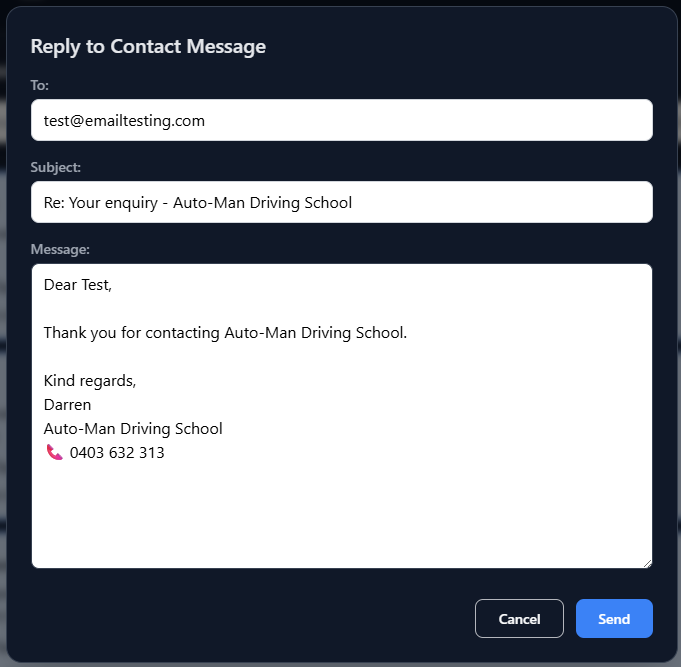When replying:
- The recipient email address is automatically populated
- The email subject is pre-filled with a standard reply format
- A professional response template is auto-generated, including greeting, business name and contact details
This reduces manual typing and ensures replies are clear, consistent and branded, while still allowing administrators to fully customise the message before sending.
Operational Value
This approach enables staff to:
- Respond to enquiries quickly with minimal effort
- Maintain a consistent and professional tone across all replies
- Reduce errors when replying to client enquiries
- Handle communication efficiently without leaving the admin dashboard
All replies are sent from a secure, authenticated interface, with sensitive contact details visible only to authorised users.
Admin Dashboard – Client Progress Tracking
The Client Progress view provides a simple, structured way for instructors and administrators to track a learner's progress across key driving skills.
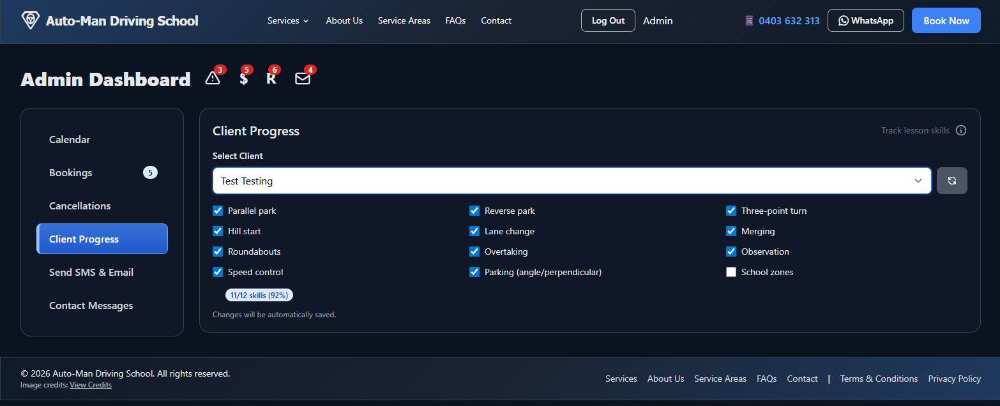Client progress tracking with auto-saved skill updates for quick, consistent lesson assessment.
Administrators can select a client and update skill completion in real time, creating a clear picture of learning progress over multiple lessons.
Skill Tracking
- Skills are presented as a clear checklist covering core driving competencies
- Each skill can be marked as completed as the learner progresses
- A progress summary shows how many skills have been completed, providing an at-a-glance overview
Automatic Saving
- All changes are automatically saved as skills are updated
- No manual save action is required, reducing the risk of lost updates
- Updates can be made quickly during or after a lesson
Operational Value
This feature enables staff to:
- Track learner progress consistently across lessons
- Identify areas that require additional focus
- Support structured lesson planning over time
- Maintain accurate progress records without additional paperwork
The result is a lightweight but effective progress-tracking tool that supports both instructional quality and efficient administration.
Admin Dashboard – Send SMS & Email
The Send SMS & Email view allows administrators to communicate directly with clients from a single, central interface.

Built-in SMS and email tools for fast, direct client communication from the admin dashboard.
This feature supports both quick SMS messages and longer email communication, enabling staff to choose the most appropriate channel for each situation.
SMS Communication
- Supports Australian mobile number formats
- Simple message field for fast, ad-hoc communication
- Ideal for short notices such as reminders, updates or follow-ups
Email Communication
- Email messages can be sent directly from the dashboard
- Separate fields for subject and message body
- Suitable for longer or more detailed communication
Operational Value
This feature enables staff to:
- Communicate with clients without leaving the admin system
- Choose between SMS and email based on urgency and message length
- Reduce reliance on external messaging tools
- Keep client communication simple and efficient
By centralising outbound communication, the system supports timely client contact while keeping administration streamlined and easy to manage.
Client Portal – My Bookings
The Client Portal allows customers to view, manage, and validate their driving lesson bookings in one place, while protecting critical booking data close to lesson time.
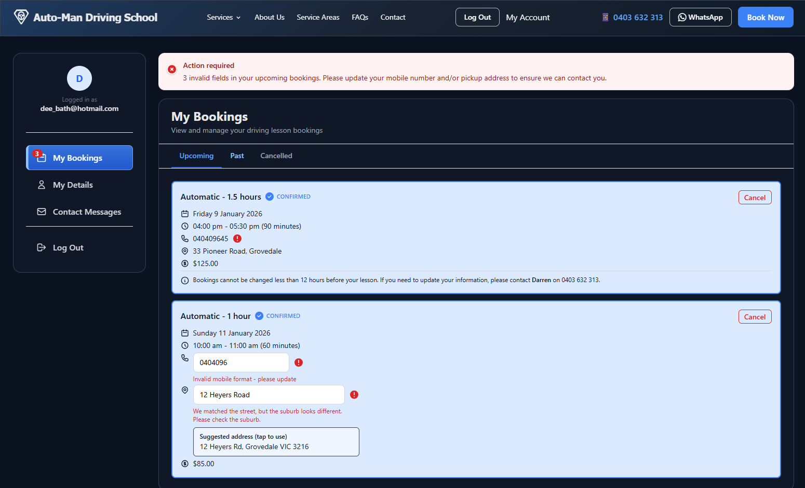Booking Overview
- Displays all upcoming, past, and cancelled bookings
- Each booking card shows:
- Lesson type and duration
- Date and time
- Booking status (e.g. Confirmed)
- Price paid
- Pickup address
- Contact mobile number
Data Validation & Alerts
- Automatic validation of mobile number and pickup address
- Invalid fields are clearly highlighted inline with:
- Error icons
- Plain-English guidance on what needs fixing
- Suggested address matching is provided when a close match is found
- A global "Action required" banner appears when any upcoming booking contains invalid data
Editable vs Locked Fields
- Certain fields (e.g. mobile number, pickup address) remain editable to allow corrections
- Other booking details (e.g. lesson type, date, time) are intentionally locked to prevent accidental changes
Time-Based Change Restrictions
- Bookings cannot be changed within 12 hours of the appointment
- This rule prevents last-minute invalid or incomplete data that could impact lesson delivery
- When changes are locked, users are instructed to contact the instructor directly if required
Cancellation Controls
- Cancel buttons are available where cancellation is permitted
- Cancellation rules are enforced consistently with booking policies
Account Navigation
Side navigation provides access to:
- My Bookings
- My Details
- Contact Messages
- Secure logout
Logged-in user identity is clearly displayed for context
Client Portal – My Details
The My Details page allows clients to view and update their personal information used for bookings, reminders and lesson delivery.
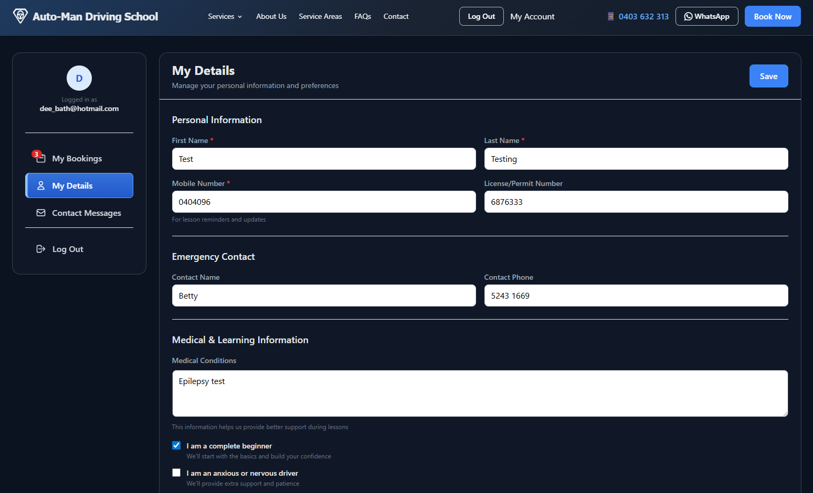Personal Information
- Edit first name and last name
- Update mobile number (used for lesson reminders and contact)
- Enter or update licence / permit number
- Mobile number is validated to prevent incorrect contact details
Emergency Contact
Add or update:
- Emergency contact name
- Emergency contact phone number
Ensures instructor has a backup contact if required
Medical & Learning Information
- Optional medical notes to support safe lesson delivery
- Learning preferences and flags, including:
- Complete beginner
- Anxious or nervous driver
- Information helps tailor lesson approach and instruction style
Save & Validation Behaviour
- Changes are saved explicitly using the Save button
- Phone numbers are validated before saving to prevent invalid data
- Inline guidance is shown if entered data does not meet required format
Account Context
- Logged-in user identity is clearly displayed
- Changes apply across bookings where permitted, without altering locked booking details
Client Portal – Contact Messages
The Contact Messages page allows clients to view messages they have previously sent to Auto-Man Driving School.
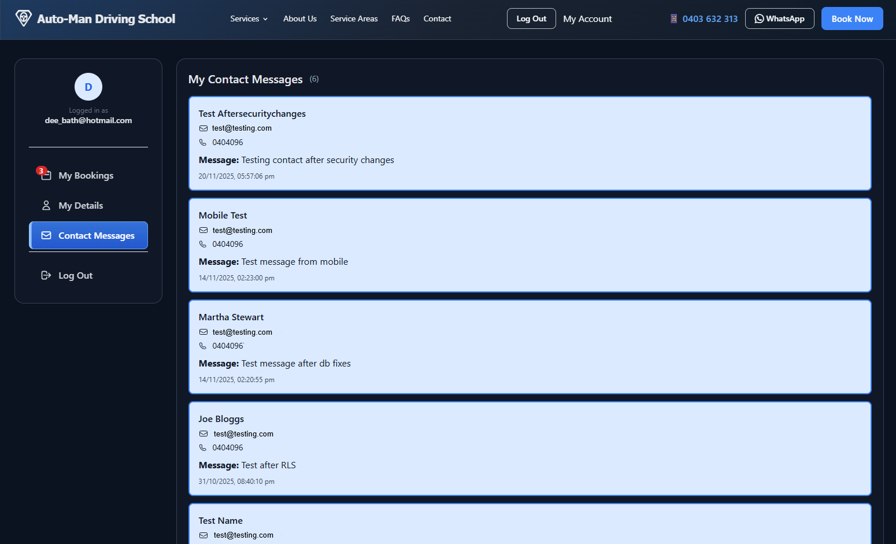- Displays a read-only list of submitted contact messages
- Each message shows:
- Name
- Email address
- Mobile number (if provided)
- Message content
- Date and time sent
- Messages are shown in reverse chronological order (most recent first)
- Message count is displayed in the page header
- No editing or deletion is permitted to preserve message history
This page provides clients with a clear record of their past enquiries and communications.
Technical Highlights
Full-Stack Implementation
Built using HTML, TypeScript, JavaScript and PL/pgSQL for both front-end and back-end integrations.
Custom CSS Theme
Designed with a custom CSS theme for a unique look and feel tailored to the business, ensuring brand consistency and professional presentation.
Google Calendar Booking Integration
Implemented using API/webhooks to keep schedules consistent across platforms. Real-time synchronization ensures instructors and staff always have up-to-date information.
Modular Site Structure
Clear separation of static content and functional pages, making the system maintainable and easy to extend as business needs evolve.
Why It Matters
Real-World Business Impact
Auto-Man transforms what was once a manual phone-and-email process into a smooth digital experience for both students and staff. It demonstrates:
- End-to-end solution delivery — from UI and portal design through back-end logic and external integrations
- User-centric functionality — real-world functionality like self-serve bookings and calendar synchronisation
- Maintainability & clarity — organised project structure and documentation designed to be easily extended
Technology Footprint
- HTML / CSS — Responsive layouts and custom branding
- TypeScript / JavaScript — Client interactivity and dynamic behaviours
- PL/pgSQL — Database logic for bookings and data operations
- Google Calendar API — Scheduling integration for real-time synchronisation